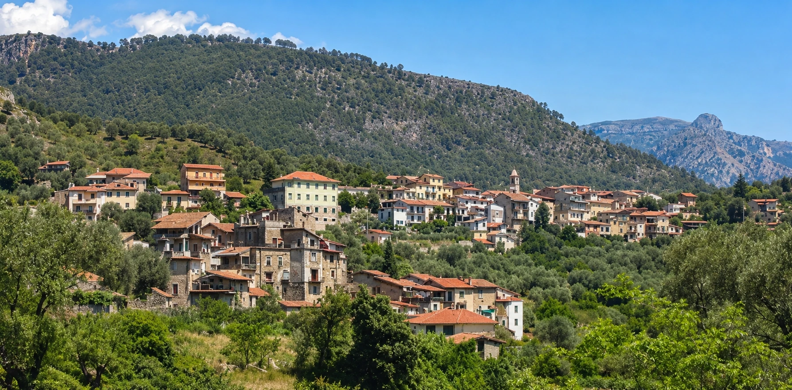

Wandelen
Vanaf het huis en in de omgeving lopen routes naar onder meer Collebassa, Torri, Piene Haute en de Grammondo.
Bergen, kust en dorpen
Een rustig Ligurisch dal met wandelpaden, rivierwater, dorpsleven en stranden binnen een half uur rijden.
Olivetta San Michele ligt praktisch op de grens met Frankrijk, aan het riviertje de Bevera. De omgeving is bergachtig en bosrijk, met veel olijfbomen en de bekende taggiasca olijf.
Het dal van de Bevera is bijzonder: de rivier stroomt vanuit de Mercantour via Olivetta naar de kust door een dal dat grotendeels alleen via wandelpaden toegankelijk is. Vanuit Olivetta loopt een verharde weg tot het kleine Bussare, waarna de rivier verder door een bergachtige, onbewoonde omgeving meandert.
Het dorp ligt op ongeveer 15 minuten lopen. Er is een dorpsplein met bar en terras, een kleine supermarkt en een winkel met lokale producten. In de zomer zijn er dorpsfeesten en gezamenlijke maaltijden, soms met muziek.

De ligging maakt het makkelijk om natuur, stranden, dorpen en cultuur af te wisselen.
Vanaf het huis en in de omgeving lopen routes naar onder meer Collebassa, Torri, Piene Haute en de Grammondo.
De stranden bij Menton, Ventimiglia en Bordighera liggen op minder dan 30 minuten rijden.
Het Nerviadal verbindt de kust met plaatsen als Dolceaqua, Apricale, Bajardo, Pigna en Perinaldo.
Net over de grens ligt Sospel. Via het Royadal bereik je de Vallée des Merveilles en het Mercantourgebied.
In de regio liggen onder meer Fondation Maeght, Musée Matisse, Villa Ephrussi en de villa van Eileen Gray.
Bezoek Giardini Hanbury, Val Rahmeh, Serre de la Madone of de cactustuin Pallanca in Bordighera.
Beelden van het dorp, de kust, tuinen en het landschap rondom Olivetta.